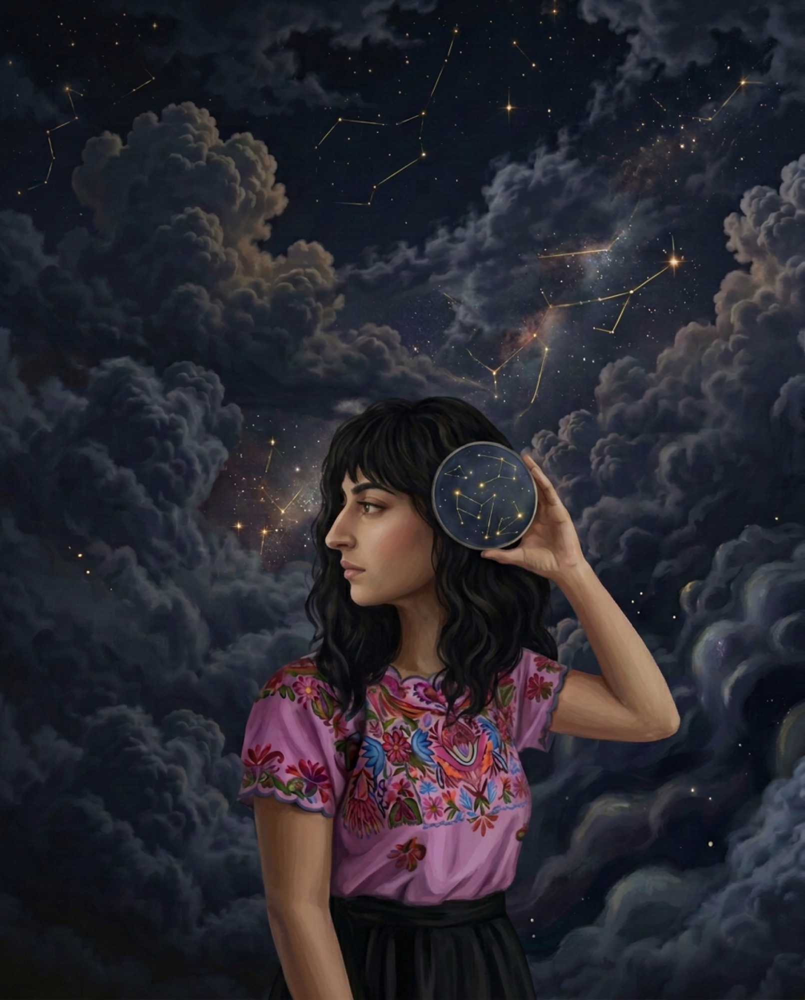
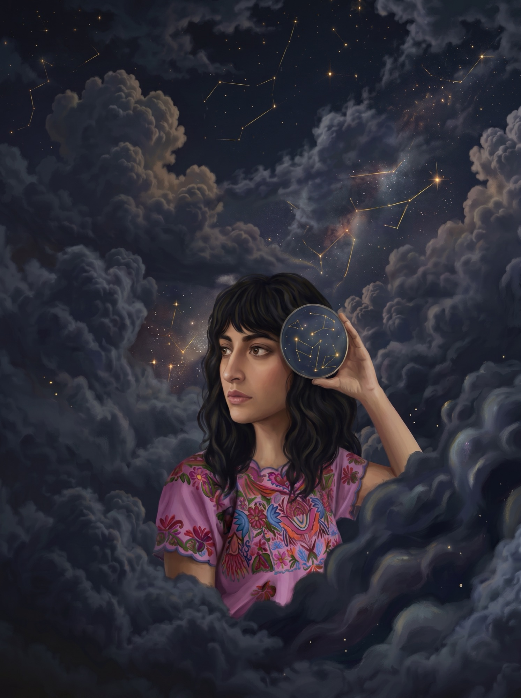
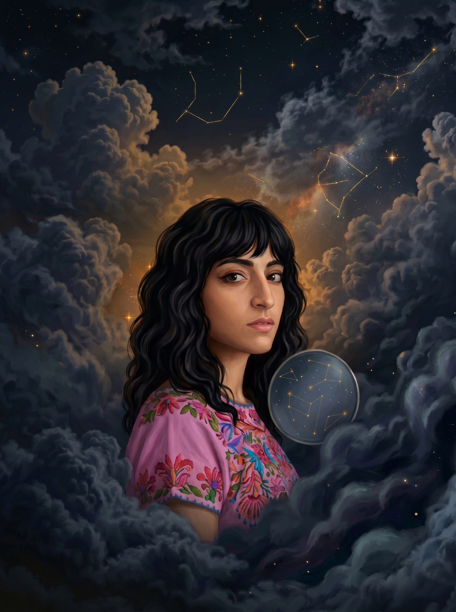
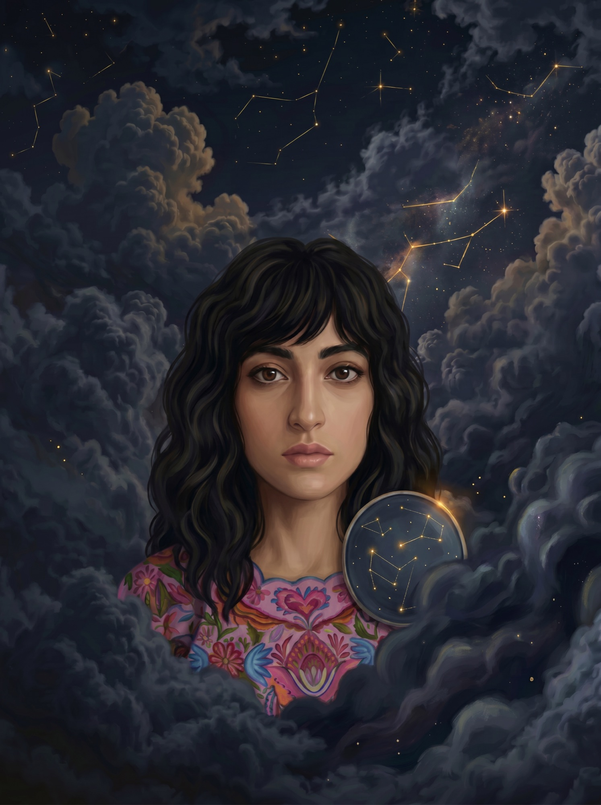
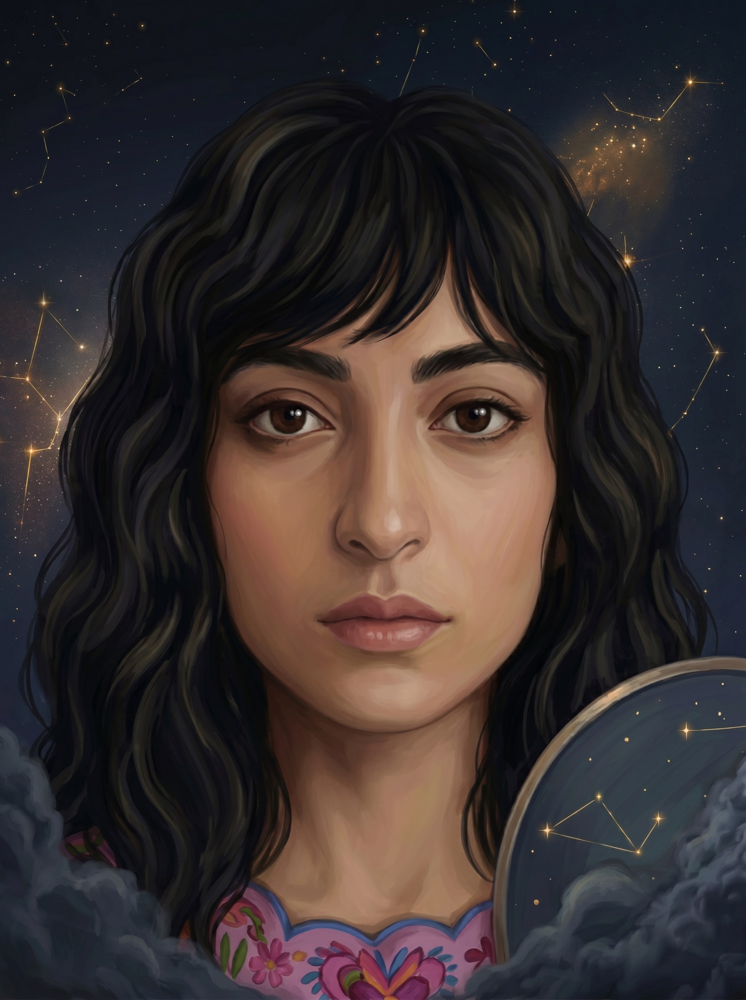
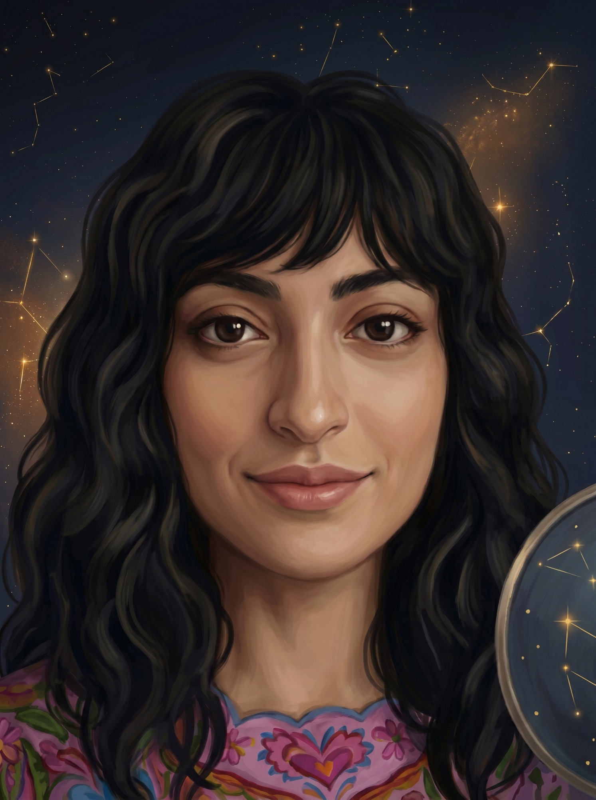
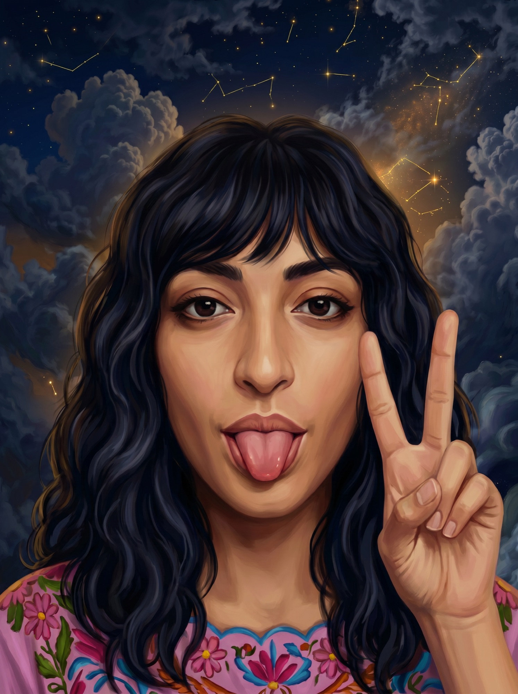

Curated rattan & bamboo treasures, restored in Austin — and sent your way from across the galaxy.
Every piece has a name, a past, and a place in your orbit.
[ Meet the Family ]Page content picks up here once the hero releases. This block only exists so you can watch the sticky stage let go in preview.